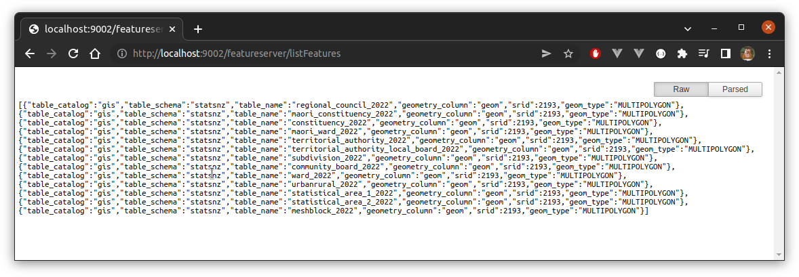

Overview
I love spatial data, and I use it a LOT. My typical use case mostly involves downloading a feature class from some online source, and then using it entirely locally. If I just want to look at it, I’ll drop it in QGIS, but oftentimes I’ll load the features into a (containerised) PostGIS-enabled database. Unfortunately, many of the features I’m interested in are harder to download than I’d like. Take the Stats NZ Geographic Data Service, for example. Let’s say we simply wish to get a local copy of the Regional Council 2022 Clipped (generalised) feature class. We can’t download this directly (or include a link in a blog-post or tutorial)–instead we:
- create an account if we don’t have one already
- ensure we have logged in
- select the feature class
- click a download link
- select the output format and coordinate reference in a dialog
- click ‘accept terms and create download’ link
- wait (sometimes for a long time) for our download to be created
- download feature class via the returned link
There is a programmatic interface, but this is even less accessible, and requires the following steps:
- create an account if we don’t have one already
- create an API key (making sure it has the right functionality selected, also)
- create a download via the
exports/layersendpoint - poll the returned endpoint until the state becomes
complete - download feature class via the embedded download link
Such services are useful for less straightforward applications, such as providing WMTS layers which can be used in leaflet or openlayers. But in the situation outlined, it would be more convenient to simply be able to download the data without fanfare via a direct link. For example, it would be extremely easy (and cheap) to simply dump the more popular features classes in an S3 bucket in a handful of common formats. But we could still make features available directly, in the preferred format, via a web service…
PostGIS via HTTP
PostGIS is awesome, we can all agree, and surely every provider of spatial data is using it, right? So I thought I’d see how easy it might be to stand up a service that can serve features stored in PostGIS to users in their preferred format. I made something that is probably not all that robust, but it was easy, and quite fun, so I thought I’d describe it. It certainly wouldn’t be that hard to enhance if somebody was motivated, so…
The basic process is actually very simple. We simply use GDAL, via the ogr2ogr command-line tool, to convert a PostGIS table to a feature class, and then we use Akka HTTP to stream the resulting file to users. ogr2ogr is run as an external process, which is a bit clunky, but serviceable. GDAL does have Java bindings, but the Java version of ogr2ogr I found online was 1718 lines of code, and I didn’t have the energy to replicate something similar in Scala (we don’t need a full ogr2ogr implementation since we’re only using PostGIS as source, and only exporting to a handful of possible formats). Note that we use Scala throughout.
A Quick Demo
A containerised version of the service can be started by running the following (note that Git large file storage is required in order to fetch the example feature classes, and sbt is required to build the service itself):
$ git lfs clone git@github.com:cmhh/featureserver.git
$ cd featureserver
$ sbt assembly
$ docker-compose up -dThe server will be running on localhost:9002. To list available features, we GET localhost:9002/featureserver/listFeatures:

Then, for example, to download regional_council_2022 as a GeoPackage file we’d GET:
http://localhost:9002/featureserver/getFeatureClass?catalog=gis&schema=statsnz&name=regional_council_2022This will result in a file named regional_council_2022.gpkg.zip which can be unzipped locally, or happily used directly in QGIS:
Now lets look in a little more detail (again, full source here)…
Get some data
I downloaded a number of feature classes from Stats NZ Geographic Data Service as GeoPackages, and loaded them to a https://github.com/cmhh/featureserver/tree/main/data repository:
Get a running PostGIS instance
As noted, I like to run PostGIS on-demand in a Docker container. We can do this easily enough by creating Dockerfile with the following content:
FROM ubuntu:20.04
ENV DEBIAN_FRONTEND=noninteractive
ENV SHELL=/bin/bash
RUN apt-get update && apt-get -y dist-upgrade && \
apt-get install -y --no-install-recommends \
wget gnupg2 ca-certificates gdal-bin sudo vim \
libgdal-dev libgeos-dev libproj-dev libsqlite3-dev libudunits2-dev && \
sh -c 'echo "deb http://apt.postgresql.org/pub/repos/apt focal-pgdg main" > /etc/apt/sources.list.d/pgdg.list' && \
wget --quiet -O - https://www.postgresql.org/media/keys/ACCC4CF8.asc | apt-key add - && \
apt-get update && apt-get install -y --no-install-recommends postgresql-14 postgresql-14-postgis-3 postgis && \
sed -i -e 's/# en_US.UTF-8 UTF-8/en_US.UTF-8 UTF-8/' /etc/locale.gen && \
dpkg-reconfigure --frontend=noninteractive locales && \
update-locale LANG=en_US.UTF-8 && \
rm -rf /var/lib/apt/lists/*
RUN service postgresql start && \
sudo -u postgres psql -c 'create database gis;' && \
sudo -u postgres psql -d gis -c 'create extension postgis;' && \
sudo -u postgres psql -d gis -c 'create extension postgis_raster;' && \
sudo -u postgres psql -d gis -c 'create extension postgis_sfcgal;' && \
sudo -u postgres psql -d gis -c 'create extension postgis_topology;' && \
sudo -u postgres psql -d gis -c "SET postgis.gdal_enabled_drivers = 'ENABLE_ALL';" && \
sudo -u postgres psql -c 'create user gisuser;' && \
sudo -u postgres psql -c "alter user gisuser with encrypted password 'gisuser';" && \
sudo -u postgres psql -c 'grant all privileges on database gis to gisuser;' && \
printf "\tlisten_addresses='*'\t" >> /etc/postgresql/14/main/postgresql.conf && \
sed -i -E '/local +all +all +peer/ s/peer/md5/' /etc/postgresql/14/main/pg_hba.conf && \
sed -i -E '/host +all +all +127.0.0.1\/32 +scram-sha-256/ s/127.0.0.1\/32/0.0.0.0\/0 /' /etc/postgresql/14/main/pg_hba.conf && \
sed -i -E '/host +all +all +::1\/128 +scram-sha-256/ s/::1\/128/::0\/0 /' /etc/postgresql/14/main/pg_hba.conf &&\
printf "localhost:5432:gis:gisuser:gisuser" >> /root/.pgpass && \
chmod 0600 /root/.pgpass
RUN adduser --disabled-password --gecos "" gisuser && \
usermod --password $(openssl passwd -1 gisuser) gisuser && \
usermod -aG sudo gisuser
EXPOSE 5432
ENTRYPOINT service postgresql start && \
tail -fWe build this and run an instance as follows:
$ docker build -t postgis <path to Dockerfile>/.
$ docker run -d --rm --name postgis -v data:/data -p 5433:5432 postgisWe deliberately mount the data folder holding each of our GeoPackages, and the we run commands along the lines of:
PGPASSWORD=gisuser psql -U gisuser -d gis -c 'create schema statsnz;'
ogr2ogr \
-f PostgreSQL PG:"dbname='gis' user='gisuser' password='gisuser'" \
regionalcouncil2022.gpkg \
-nln statsnz.regional_council_2022
ogr2ogr \
-f PostgreSQL PG:"dbname='gis' user='gisuser' password='gisuser'" \
maoriconstituency2022.gpkg \
-nln statsnz.maori_constituency_2022We can automate this further (and, obviously be safer with passwords and root priviliges), but this is good for illustration.
Save PostGIS table as ‘files’ on disk
We first write a function with the following signature:
def command(
catalog: String, schema: String, table: String,
path: String, format: Option[Format], epsg: Option[Int], simplify: Option[Double]
): Result[String]Result is a simple custom type, similar to Try, except that the happy path is further differentiated into Empty and NonEmpty, and we do this so that we can send different HTTP codes in each case (while still using pattern matching). The command function first confirms the requested feature class exists, returning a valid ogr2ogr command inside a NonEmpty Result if it does, and an Empty Result if not. If the PostGIS database is unreachable, the result will be a Throwable inside an Error Result. But, as an example (the output isn’t as pretty–I added some line breaks!):
utils.command(
"gis", "statsnz", "regional_council_2022",
"blah", "geopackage", Some(4326), Some(100)
) match {
case NonEmpty(cmd) => println(cmd)
case _ => ()
}ogr2ogr -f "GPKG" "blah/regional_council_2022.gpkg" \
PG:"host=localhost port=5433 user=gisuser password=gisuser dbname=gis" \
"statsnz.regional_council_2022" \
-t_srs "EPSG:4326" -simplify 100.0 -nlt MULTIPOLYGON \
-nln "regional_council_2022" -overwriteThis command can be run as a process easily enough:
import sys.process._
val p = Process(s"""$cmd""")
p.!!We then zip the results using the java.util.zip library using the following function:
import java.nio.file.Files
import java.io.{File, FileInputStream, FileOutputStream}
import java.util.zip.{ZipEntry, ZipOutputStream}
import com.typesafe.config.{Config, ConfigFactory}
import scala.util.Try
def zip(folder: String, outfile: String): Try[String] = Try {
val dir: File = new File(folder)
val files = dir.listFiles().toList
val fos: FileOutputStream = new FileOutputStream(outfile)
val zos: ZipOutputStream = new ZipOutputStream(fos)
files.foreach(f => {
val fis = new FileInputStream(f)
val entry = new ZipEntry(f.getName())
zos.putNextEntry(entry)
val buff = Array.fill[Byte](1024)(0)
def loop(s: FileInputStream): Unit = {
val n = s.read(buff)
if (n < 0) ()
else {
zos.write(buff, 0, n)
loop(s)
}
}
loop(fis)
fis.close()
f.delete()
})
zos.close()
fos.close()
outfile
}Actually, we combine all the steps into a single function with the following signature:
def exportAndZip(
catalog: String, schema: String, table: String,
format: String, epsg: Option[Int], simplify: Option[Double]
): Result[(String, String)]The resulting tuple contains the folder where the ouptput is stored, and the name of the compressed archive. The output folder will be a temporary folder, and later it will be deleted after it has been streamed to the client–so many side-effects!
Stream ‘files’ to clients
Clients will be able to GET a feature class via the /getFeatureClass endpoint. The logic for this is:
val getFeatureClass = path("getFeatureClass") {
parameters(
"catalog", "schema", "name", "format".withDefault("gpkg"), "epsg".as[Int].?, "simplify".as[Double].?
){ (catalog, schema, name, format, epsg, simplify) =>
utils.exportAndZip(catalog, schema, name, format, epsg, simplify) match {
case NonEmpty(res) =>
val d = new java.io.File(res._1)
val f = new java.io.File(res._2)
val source = FileIO
.fromPath(f.toPath)
.watchTermination() { case (_, result) =>
result.onComplete(_ => {
f.delete()
d.delete()
})
}
respondWithHeader(`Content-Disposition`(attachment, Map("filename" -> f.getName()))) {
complete(HttpEntity(ContentTypes.`application/octet-stream`, source))
}
case Empty =>
complete(HttpResponse(
StatusCodes.NoContent
))
case Error(e) =>
complete(HttpResponse(
StatusCodes.InternalServerError,
entity = HttpEntity(ContentTypes.`application/json`, s""""${e.getMessage()}"""")
))
}
}
}Neat!
Issues
The server works as it is. We can use it to download PostGIS features. We can reproject and simplify our data, and we can export to GeoPackage, shapefile, or GeoJSON. It’s likely the server will stop responding if several people simultaneously download a large feature class, but who knows! Also, there isn’t much in the way of feedback–if a client requests a large feature class that takes a while to prepare (the meshblock_2022 dataset is the biggest here, at around 90MB, and takes about 10 seconds to finish streaming, with no re-projection or simplifying) they won’t have any way of checking progress. Also, we delete objects after streaming, while it might make more sense to cache them for some period of time in the event they could be recycled.